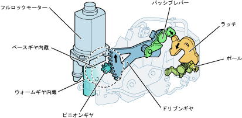

| Slided arock ASSY |
| ● |
The rotation of the full rock motor is transmitted in the order of warm gear → base gear → pinion gear, and driven gear linked to pinnion gear is driven.As a result, the latch rotates with the passive lever, causing a full latch to the full latch to the full latch from half door.
|
|  |
 Slide de Iiglorer position detection switch Slide de Iiglorer position detection switch
|
Slide de Iiglorer Contact operation
|
Slide de Iiglorer Mecha Cancellation Organization
|